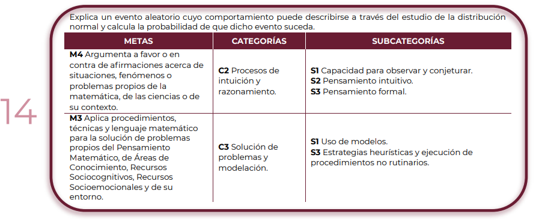

“MathMinds”
Progresión 14
Introducción a la Progresión 14

¡Bienvenidos a la Progresión 14! 🎯
En esta etapa, exploraremos cómo ciertos eventos aleatorios pueden describirse y analizarse matemáticamente mediante la distribución normal. Además, aprenderás a calcular probabilidades para predecir la ocurrencia de dichos eventos.
A lo largo de esta progresión, desarrollarás habilidades esenciales como:
✅ Aplicar modelos matemáticos para interpretar situaciones del entorno.
✅ Utilizar la distribución normal para analizar eventos aleatorios.
✅ Argumentar sobre fenómenos matemáticos y científicos basados en datos y evidencia.
✅ Ejecutar estrategias heurísticas y procedimientos matemáticos para la resolución de problemas.
🔹 ¿Por qué es importante la distribución normal?
La distribución normal es una de las herramientas más poderosas en estadística y probabilidad. Nos ayuda a modelar eventos como:
📊 Resultados de exámenes en un grupo de estudiantes.
🌡️ Temperaturas diarias en una ciudad.
🎲 Variaciones en procesos de producción en la industria.
📌 Para comenzar, revisa la siguiente presentación y video, donde exploraremos cómo la distribución normal nos permite analizar datos del mundo real.
📽️ Video: "¿Qué es la distribución normal y por qué es importante?"
📊 Presentación: "Aplicaciones de la distribución normal en la vida cotidiana"
💬 Después, participa en el foro inicial respondiendo la siguiente pregunta:
"Piensa en una situación en la que te gustaría predecir la probabilidad de un evento (ejemplo: calificaciones de un examen, altura de una población, tiempo de espera en un banco). ¿Cómo crees que la distribución normal podría ayudarte a analizarlo?"
📢 ¡Es momento de descubrir cómo la probabilidad y la estadística nos ayudan a interpretar el mundo! 🚀📊
Obra publicada con Licencia Creative Commons Reconocimiento 4.0